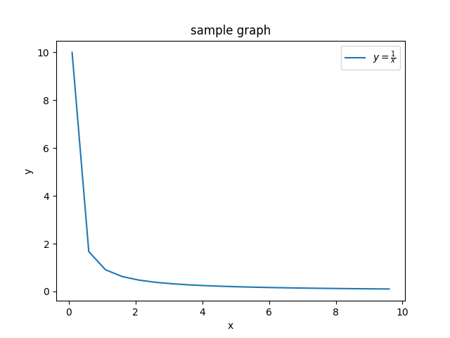
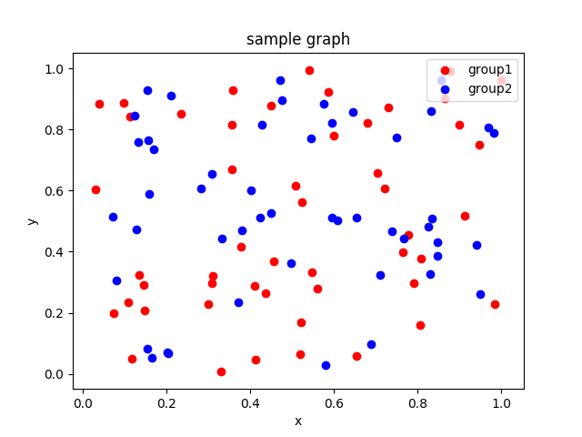

matplotlib template
2次元
折れ線
import matplotlib.pyplot as plt
import numpy as np
xs = np.arange(0.1, 10, 0.5)
ys = 1 / xs
plt.plot(xs, ys, c='red', label='$y=\\frac{1}{x}$')
plt.title('sample graph')
plt.xlabel('x')
plt.ylabel('y')
plt.legend()
plt.show()

散布図
import matplotlib.pyplot as plt
import numpy as np
rx = np.random.rand(50)
ry = np.random.rand(50)
plt.scatter(rx, ry, c='red', label='group1')
bx = np.random.rand(50)
by = np.random.rand(50)
plt.scatter(bx, by, c='blue', label='group2')
plt.title('sample graph')
plt.xlabel('x')
plt.ylabel('y')
plt.legend(loc='upper right')
plt.show()
